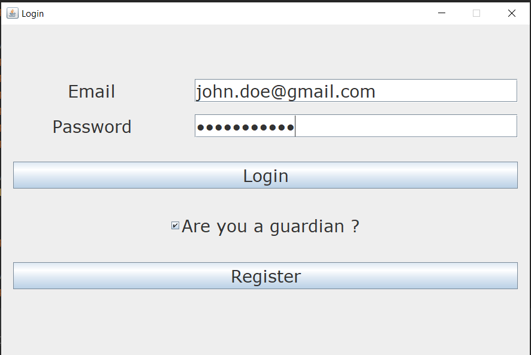
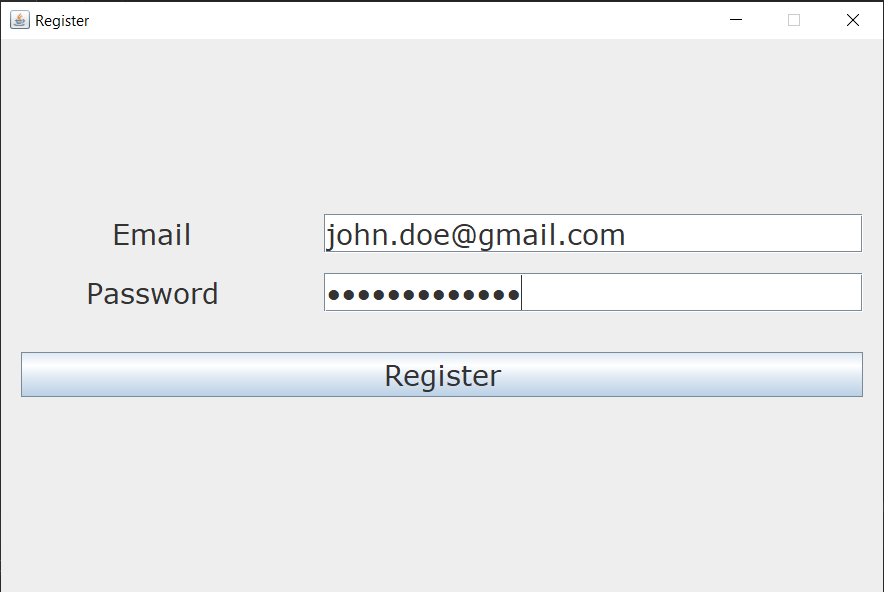
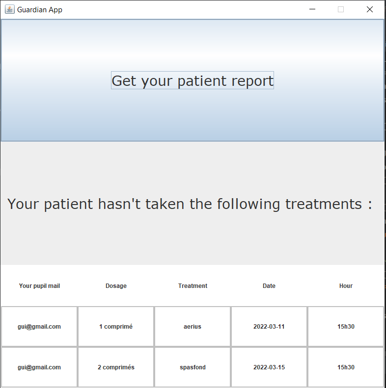
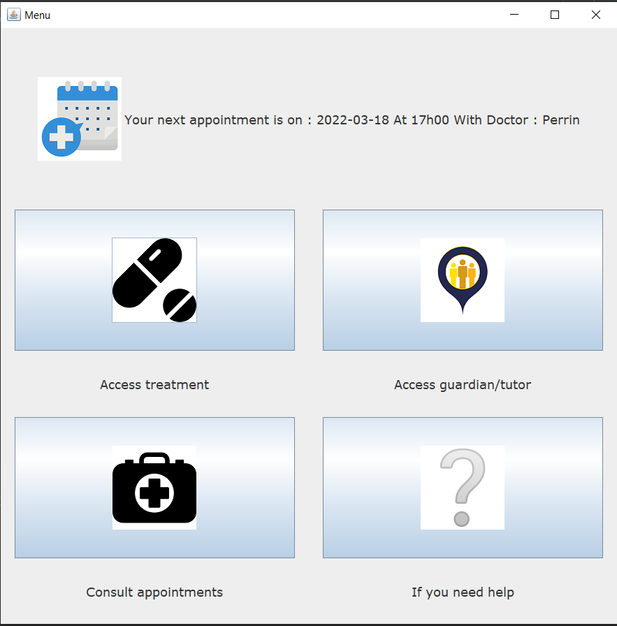
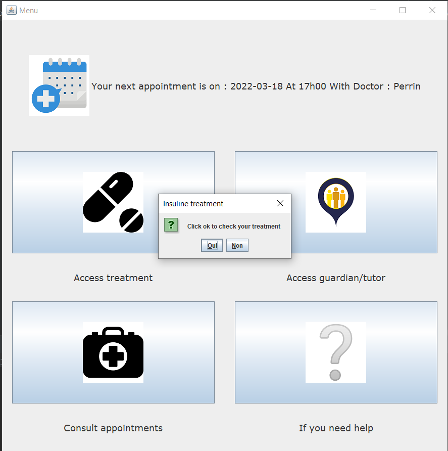
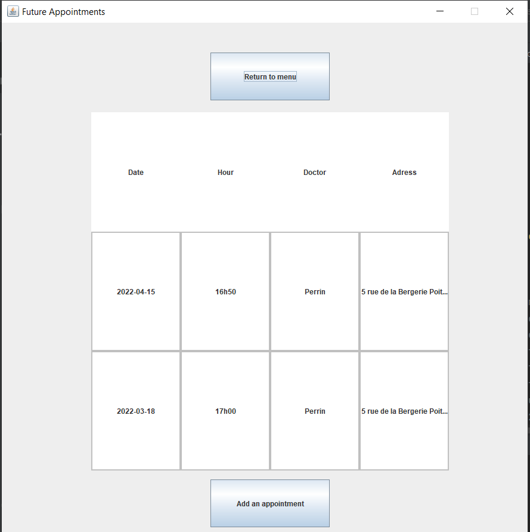

<!DOCTYPE html>
<html lang="en"></html>
<html>
<head>
    <link rel="stylesheet" type="text/css" href="style_DoctoApp.css">
	<meta charset="utf-8">
    <title>DoctoApp</title>
</head>

<body>
    <div class="header">
        <nav id="navbar">
            
            <ul id="menu">
                <li><a href="index.html">Home</a></li>
                <li ><a href="Diagrams.html">Diagrams</a></li>
                <li><a href="Screenshots.html">App screenshots</a></li>
            </ul>
        </nav>
    </div>

    <div id="fifth_block">
        <h1>Screenshots of the application</h1>

        <h2>Login page</h2>
        
        <p>To log in the website, you have to entrer a valid email (existing in the database) and the corresponding password then press the login button.
            You can also check the checkbox in the middle of the screen if you want to access the tutor version of the app and not the patient version.
            The validation is done using SQL queries. If the user hasn't registered yet he will have to click the register 
            button in order to be redirected to the register page.
        </p>

        <h2>Register page</h2>
        
        <p>Same porcess as the Login page but you have to enter an email that doesn't exist yet in the database.</p>

        <h2>Tutor App</h2>
        
        <p>You access this page by clicking the checkbox on the login page. Here you can get
            a report in a txt file of all you pupil's treatments and also see in the table all the treatments you pupil hasn't confirmed 
            taking them. The link between a pupil and his tutor his made with id connection in the database and the informations are dynamically
            displayed using SQL queries. 
        </p>

        <h2>Menu</h2>
        
        <p>Here is our menu, on the top, you can see your next medical appointment if you have one.
            Next, you have four icons button that leads to the different pages of the app.
            The next appointment is determined by a SQL querry checking all the user's appointment after the
            actual time and ordering them in an ascendant order.
        </p>

        <h2>Notification pop up</h2>
        
        <p>This is a pop up to remind the user to take the treatment.
            This pop up is generated when the user loads a new page and that
            the time in the machine correspond to the treatment time.
            It's also displayed only if the user hasn't confirmed yet that he took his treatment.
        </p>

        <h2>Notification page</h2>
        
        <p>One this notification, you can comfirm that you took your treatment.
            And of course see a remainder of the medication you need to take, the dosage and the remaining number of days.
            When confirmed or not it will directly update the database.
        </p>

        <h2>Treament page</h2>
        
        <p>Here is the schedule of the user's treatments. Each row correspond to one treatment.
            The user can go back to the menu or add a new treatment by clicking on the 2 buttons.
            The datas are loaded dynamically from the database.
        </p>

        <h2>Page to add treaments</h2>
        
        <p>On this page, the user can add a new treatment by filling the form with the treatment name, the dosage, the remaining days and the hour.
            Or he can decide to go back to the treatment page.
        </p>

        <h2>Appointment page</h2>
        
        <p>Here is the schedule of the user's appointment. Each row correspond to an appointement.
            The user can go back to the menu or add a new appointment by clicking on the 2 buttons.
            The datas are loaded dynamically from the database.
        </p>

        <h2>Page to add appointements</h2>
        
        <p>On this page, the user can add a new appointment by filling the form with the doctor name, the adress and the date.
            Or he can decide to go back to the appointment page.
        </p>

        <h2>Guardian page</h2>
        
        <p>Here is the guardian page where user can see the guardian's information. He can also change the informations.
            Or he can decide to go back to the menu.
        </p>

        <h2>Page to modify guardian info</h2>
        
        <p>Here the user can change it's tutor by entering a new name and a new email and then confirm the update by
            pressing the save button.
            Or he can decide to go back to guardian page.
        </p>

        <h2>Help page</h2>
        
        <p>Finaly, this is the help page created to explain the basic functionalities of the app to the user.</p>
        

    </div>
    <script type="text/javascript" src="script.js"></script>
</body>
</html>